전자계산기기사 (2012-09-15 기출문제)
1과목: 시스템 프로그래밍
1. 어떤 기호적 이름에 상수 값을 할당하는 어셈블리어 명령은?
- DC
- USING
- LTORG
- EQU
(정답률: 88%)

2. 어셈블러를 이중 패스(Two Pass)로 구성하는 주된 이유는?
- 어셈블러의 크기
- 오류 처리
- 전향 참조(Forward Reference)
- 다양한 출력 정보
(정답률: 89%)
3. 서브루틴에서 자신을 호출한 곳으로 복귀시키는 어셈블리어 명령은?
- SUB
- MOV
- INT
- RET
(정답률: 92%)
4. 인터프리터에 대한 설명으로 옳지 않은 것은?
- 프로그램 실행시 매번 번역해야 한다.
- 목적 프로그램으로 번역한 후, 링킹 작업을 통해 실행 프로그램을 생성한다.
- 원시 프로그램의 변화에 대한 반응이 빠르다.
- 시분할 시스템에 유용하다.
(정답률: 48%)
5. 교착상태의 해결 방법 중 은행원 알고리즘과 관계되는 것은?
- 예방 기법
- 회피 기법
- 발견 기법
- 회복 기법
(정답률: 74%)
6. 기계어에 대한 설명으로 옳지 않은 것은?
- 컴퓨터가 직접 이해할 수 있는 언어이다.
- 기종마다 기계어가 다르므로 언어의 호환성이 없다.
- 0과 1의 2진수 형태로 표현되며 수행 시간이 빠르다.
- 고급 언어에 해당한다.
(정답률: 94%)
7. 로더(Loader)의 기능에 해당하지 않는 것은?
- Allocation
- Loading
- Translation
- Linking
(정답률: 70%)
8. 기억장치 배치 전략 중 프로그램이나 데이터가 들어갈 수 있는 크기의 빈 영역 중에서 단편화를가장 많이 남기는 분할 영역에 배치시키는 방법은?
- 최초 적합
- 최적 적합
- 최후 적합
- 최악 적합
(정답률: 80%)
9. 스케줄링 정책 중 각 프로세스에게 차례대로 일정한 배당시간 동안 프로세서를 차지하도록 하는 정책으로 일정 시간이 초과되면 강제적으로 다음 프로세스에게 차례를 넘기게 하는 것은?
- FIFO
- RR
- SJF
- HRN
(정답률: 58%)
10. 운영체제의 목적으로 거리가 먼 것은?
- 사용자와 컴퓨터 간의 인터페이스 제공
- 자원의 효율적 운영 및 자원 스케줄링
- 처리 능력 및 반환 시간의 증가
- 데이터 공유 및 주변장치 관리
(정답률: 81%)
11. 시분할시스템과 가장 밀접한 관계가 있는 스케줄링 정책은?
- HRN
- SJF
- SRT
- RR
(정답률: 57%)
12. 일반적인 로더(general loader)에 가장 가까운 것은?
- compile-and-go loader
- absolute loader
- dynamic linking loader
- direct linking loader
(정답률: 74%)
13. 매크로 프로세서가 수행하는 기본 기능에 해당하지 않는 것은?
- 매크로 정의 인식
- 매크로 정의 저장
- 매크로 호출 인식
- 매크로 정의 치환
(정답률: 86%)
14. 절대 로더(Absolute Loader)에서 로더의 기능은?
- 재배치
- 적재
- 할당
- 연결
(정답률: 64%)
15. 어셈블리 언어에 대한 설명으로 옳지 않은 것은?
- machine code를 mnemonic symbol로 표현한 것이다.
- cpu로 쓰이는 processor에 따라 그 종류가 다르다.
- machine 명령문과 pseudo 명령문이 있다.
- high level의 언어이다.
(정답률: 87%)
16. 시스템 소프트웨어에 해당하지 않는 것은?
- Spread Sheet Program
- Macro Processor
- Operating System
- Compiler
(정답률: 75%)
17. 운영체제의 운용 기법 중 일정량 또는 일정 기간 동안 데이터를 모아서 한꺼번에 처리하는 방식은?
- Time Sharing System
- Real Time Processing System
- Batch Processing System
- Distributed Processing System
(정답률: 89%)
18. 언어의 유효한 구조에 관한 규칙을 무엇이라 하는가?
- Syntax
- Compile
- DBMS
- Link
(정답률: 84%)
19. 두 개의 프로세스가 서로 다른 프로세스가 가지고 있는 자원을 무한정 기다리고 있으며, 자신이 차지하고 있는 자원을 내놓지 않을 경우에 이 두 프로세서에게는 영원히 처리기를 배정할 수 없게 된다. 이러한 현상을 무엇이라 하는가?
- Dead Lock
- Semaphore
- Virtual System
- Critical Section
(정답률: 87%)
20. 어셈블리어에서 라이브러리에 기억된 내용을 프로시저로 정의하여 서브루틴으로 사용하는 것과 같이 사용할 수 있도록 그 내용을 현재의 프로그램내에 포함시켜주는 명령은?
- EVEN
- ORG
- EJECT
- INCLUDE
(정답률: 81%)
2과목: 전자계산기구조
21. 기억장치와 입출력 장치의 차이점을 나타낸 것 중에서 가장 중요한 차이점은?
- 정보의 단위
- 동작의 자율성
- 착오 발생률
- 동작 속도
(정답률: 77%)
22. 다중처리기의 프로세서간 상호연결 방법으로 적당하지 않은 것은?
- 크로스바 스위치(crossbar switch)
- 시분할 공통버스(time-shared common bus)
- 이중 버스구조(dual-bus structure)
- 주파수 분할 공통버스(frequency-shared common bus)
(정답률: 46%)
23. 다중 처리기를 사용하여 개선하고자 하는 주된 목표가 아닌 것은?
- 수행속도
- 신뢰성
- 유연성
- 대중성
(정답률: 57%)
24. 다음 회로도에 해당하는 게이트(gate)는?
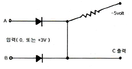
- OR
- AND
- NAND
- NOR
(정답률: 58%)
25. 다음 명령 중 실행시간이 가장 오래 걸리는 것은?
- Clear register
- Shift register(1 bit)
- Complement Acc
- Branch and save return address
(정답률: 73%)
26. 음수를 2의 보수로 표현할 때, 16비트로 나타낼 수 있는 정수의 범위는?
- -215 ~ +215
- -216 ~ +216
- -215-1 ~ +215
- -215 ~ +215-1
(정답률: 61%)
27. 가상 메모리(Virtual Memory)에 대한 설명으로 옳은 것은?
- 가상 메모리 체제는 컴퓨터의 속도를 개선하기 위한 방법이다.
- 소프트웨어보다는 하드웨어의 의해 실현된다.
- 가상 메모리는 데이터를 미리 주기억장치에 저장한 것을 말한다.
- 가상 메모리 체제는 메모리의 공간 확대를 도모한다.
(정답률: 66%)
28. 제어장치의 일부로 명령을 실행하는데 필요한 신호를 보내고 제어하는 회로의 gate를 여는 구실을 하는 것은?
- 명령레지스터
- 인코더
- 제어계수기
- 디코더
(정답률: 33%)
29. 고정 소수점(fixed point) 방식에 관한 설명 중 옳은 것은?
- 2의 보수 표현 방식이 1의 보수 표현 방식보다 하드웨어로 구현하기 쉽다.
- 크게 지수부분과 가수부분으로 나눈다.
- 부호는 양수(+)일 때 0으로, 음수(-)일 때는 1로 부호 비트를 표시한다.
- 2의 보수 표현방법에서 0은 +0, -0 두 가지가 있다.
(정답률: 66%)
30. 다음 [보기]는 어떤 장치에 대한 설명인가?
- 연산장치
- 출력장치
- 제어장치
- 기억장치
(정답률: 69%)
31. CPU에서 DMA 제어기로 보내는 자료가 아닌 것은?
- DMA를 시작시키는 명령
- 입출력하고자 하는 자료의 양
- 입력 또는 출력을 결정하는 명령
- 입출력에 사용할 CPU 레지스터에 대한 정보
(정답률: 70%)
32. 다음 2진수를 16진수로 표시하면 어떻게 되는가?
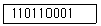
- D81
- 1B1
- 661
- 331
(정답률: 70%)
33. 인쇄 장치 중에서 인쇄되는 문자가 보통 활자체로 되지 않고 점에 의해 인쇄되는 프린터는?
- print wheel printer
- dot matrix printer
- chain printer
- bar printer
(정답률: 71%)
34. 파이프라인 처리방식에서 segment가 6개이고, task가 10개라 하면, 이 task가 모두 완료되기 위해서는 몇 개의 clock cycle이 필요한가?
- 6개
- 10개
- 15개
- 60개
(정답률: 50%)
35. 오류검출코드에 대한 설명으로 틀린 것은?
- Biquinary 코드는 5비트 중 1이 2개 있다.
- 2 out of 5 코드는 코드의 각 그룹 중 1의 개수가 2개 있다.
- 링 카운터 코드는 10개의 비트로 구성되어 있으며, 모든 코드가 하나의 비트에 반드시 1을 가진다.
- Hamming 코드는 오류검출 및 교정이 가능하다.
(정답률: 45%)
36. CPU내 레지스터들과 주기억장치에 다음과 같이 저장되어 있다. 직접주소지정방식을 사용하는 명령어의 주소필드에 저장된 내용이 150일 때, 유효주소와 그에 의해 인출되는 데이터는?
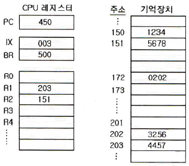
- 유효주소 : 150, 데이터 : 1234
- 유효주소 : 171, 데이터 : 5678
- 유효주소 : 172, 데이터 : 202
- 유효주소 : 202, 데이터 : 3256
(정답률: 74%)
37. 소프트웨어 인터럽트 사용시 특징으로 옳은 것은?
- 우선순위 변경이 쉽다.
- 속도가 빠르다.
- 비용이 비싸다.
- 데이지 체인 방식이다.
(정답률: 50%)
38. 컴퓨터에서 사용하는 명령어의 기능별 분류와 명령어의 연결이 옳은 것은?
- 제어 기능 - JMP(Jump 명령)
- 전달 기능 - ROL(Rotate Left 명령)
- 함수연산 기능 - LDA(Load Acc 명령)
- 입출력 기능 - CMP(Complement 명령)
(정답률: 61%)
39. 메모리에 저장된 데이터를 찾는데 있어서 데이터가 있는 메모리 주소보다 데이터 내용으로 접근하여 데이터를 찾는 메모리 장치를 무엇이라 하는가?
- Associative Memory
- Virtual Memory
- Core Memory
- Magnetic Disk
(정답률: 78%)
40. 고속 입출력 장치를 위한 입출력 프로세서로 사용할 수 있는 것은?
- selecter 채널
- multiplexer 채널
- 데이터통신 프로세서
- 데이터 채널
(정답률: 74%)
3과목: 마이크로전자계산기
41. 마이크로프로세서의 출현과 가장 관계가 깊은 것은?
- 반도체 기술의 향상
- 다양한 컴퓨터 주변 장치의 개발
- 소프트웨어 기술의 진보
- Bit - Slice 컴퓨터의 개발
(정답률: 52%)
42. 제어신호 중 마이크로프로세서로 들어가는 방향인 것은?
- write 신호
- interrupt 요청
- 기억장치 요청(memory request)
- 버스요철인지(bus acknowledge)
(정답률: 62%)
43. 다음 언어처리 소프트웨어 중 프로그램 실행(execution) 기능을 갖고 있는 것은?
- assembler
- cross assembler
- compiler
- interpreter
(정답률: 37%)
44. 마이크로컴퓨터와 마이크로프로세서에 관한 설명 중 틀린 것은?
- 마이크로컴퓨터의 기본 구성은 대형 컴퓨터나 미니컴퓨터와 같다.
- 최초의 마이크로프로세서는 1971년 미국 인텔사가 개발한 4004이다.
- 마이크로컴퓨터의 중앙처리장치는 마이크로프로세서로 되어 있다.
- 마이크로프로세서는 3개의 LSI칩으로 구성되어 마이크로컴퓨터에 사용된다.
(정답률: 52%)
45. fetch 상태에 관한 설명 중 맞는 것은?
- 주기억장치를 일정한 간격을 두고 모듈별로 주소를 배정하여 각 모듈을 번갈아 가면서 접근할 수 있는 상태를 말한다.
- 프로그램이 중단상태인 것을 말한다.
- 기억장치에서 명령을 읽어내고 이를 디코딩한다.
- 기억장치에서 명령을 읽어내고 이를 인코딩한다.
(정답률: 50%)
46. 소스 프로그램의 컴파일이 불가능한 소규모 마이크로컴퓨터에서 이를 컴파일하기 위해 보다 대용량의 컴퓨터를 이용, 컴파일 작업을 수행하고자 한다. 이 때 사용되는 컴파일러는?
- Macro Compiler
- Absolute Compiler
- Cross Compiler
- Relocation Compiler
(정답률: 57%)
47. 다중 프로세서(multiprocessor)에서 I/O 프로세서와 메모리장치 상호간의 연결방법으로 적합하지 않은 것은?
- 크로스바 스위치(crossbar switch)
- 이중 버스(dual bus) 구조
- 다중 포트(multiport) 메모리
- 다중 포인트(multipoint) 메모리
(정답률: 53%)
48. 다음 중 디버거인 ICE(In-Circuit Emulator)의 특징에 속하지 않은 것은?
- 롬 프로그램만 다운로딩할 수 있는 기능
- 임의의 어드레스로 실행을 정지시키는 브레이크포인트 기능
- 실행시간을 실시간으로 확인 가능한 리얼타임 트레이스 기능
- 레지스터로의 데이터 설정 기능
(정답률: 60%)
49. 가상 기억체계에 사용되는 보조기억장치로 가장 적당한 것은?
- Magnetic Tape
- DRAM
- Mask ROM
- Magnetic Disk
(정답률: 57%)
50. 칩 슬라이스로 구성한 마이크로 전자계산기가 마이크로프로세서로 구성한 마이크로 전자계산기보다 상대적으로 유리하다고 생각되는 장점 중 틀린 것은?
- 연산속도
- 가격
- 확장성
- 적응성
(정답률: 50%)
51. 데이터의 특정 부분을 제거(clear)하기 위해 사용되는 명령어는?
- AND
- OR
- Complement
- Shift
(정답률: 58%)
52. 마이크로컴퓨터가 RAM IC 하나보다 큰 용량이 필요하면 여러 개의 RAM을 연결하는데 이 때 각각의 RAM을 구별하기 위해 주소 버스의 어느 비트에 연결하는가?
- 하위비트
- 상위비트
- 중간비트
- 제어비트
(정답률: 57%)
53. isolated I/O 방식의 장점을 나타낸 것은?
- 입출력을 위해 일반 인스트럭션을 사용하므로 인스트럭션의 종류가 다양하다.
- 입출력 장치가 기억장치의 주소를 사용하므로 기억장치가 사용할 수 있는 주소가 줄어든다.
- 입출력이 언제 수행되는지를 알아보기가 쉽다.
- 입출력 포트의 개수를 크게 할 수 있다.
(정답률: 34%)
54. 다음 반도체 중 한번 프로그램하고 난 후 다시 프로그램이 불가능한 것은?
- RAM
- EPROM
- PROM
- EAROM
(정답률: 48%)
55. 100핀의 접속점을 갖는 컴퓨터용 백플레인 접속 규격으로 마이크로컴퓨터용 최초의 산업 표준 버스(bus)는?
- S-100
- RS-232C
- IEEE-488
- CAMAC
(정답률: 53%)
56. 다음은 어떤 마이크로프로세서가 입출력과 관련된 작업 때문에 아무런 일을 하지 않고 시간을 지연시키는 프로그램이다. 각 인스트럭션 옆에는 이를 수행하기 위하여 필요한 machine stste 수가 표시되어 있다. 이 마이크로프로세서의 기본 clock 주기가 2[MHz]이고, 1[ms]를 지연시킨다면 B레지스터에 기록되어야 하는 가장 근사값은?
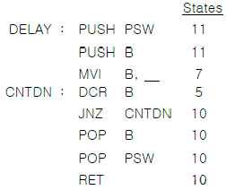
- 90
- 110
- 130
- 150
(정답률: 57%)
57. 입출력 인터페이스에 관한 설명 중 틀린 것은?
- RS-232C는 병렬 인터페이스를 위한 표준이다.
- IEEE-488은 범용 인터페이스 버스(GPIB)의 표준이다.
- 병렬 인터페이스는 짧은 응답시간이 요구되는 응용분야에 적합하다.
- RS-232C는 모뎀과 함께 사용되기도 한다.
(정답률: 59%)
58. CMOS RAM의 특징이 아닌 것은?
- 전원을 배터리 백업하여 불휘방성 IC 메모리로 쓸 수 있다.
- 저소비 전력이다.
- 속도가 빠르다.
- 비트 단가가 싸다.
(정답률: 31%)
59. 매크로 레벨 구조의 정의와 관련이 없는 것은?
- 명령의 집합
- 데이터의 형식
- 소프트웨어 종류
- 기억장치의 논리적 호출 방식
(정답률: 72%)
60. 다음 흐름도(flowchart)에서 사용되지 않는 명령은?
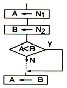
- 로드(load) 명령
- 가산(add) 명령
- 비교(compare) 명령
- 점프(jump) 명령
(정답률: 62%)
4과목: 논리회로
61. JK 플립플롭에 대한 설명 중 틀린 것은?
- 입력에 모두 펄스가 가해지면 반전이 일어난다.
- 펄스를 가하지 않으면 반전이 일어난다.
- 입력 J에 펄스를 가하면 플립플롭은 1이 된다.
- 입력 K에 펄스를 가하면 플립플롭은 0이 된다.
(정답률: 63%)
62. 다음 트랜지스터 로직회로 중 소비전력이 가장 적은 것은?
- DTL
- ECL
- RTL
- TTL
(정답률: 30%)
63. 다음 그림과 같은 MUX를 구성하기 위한 논리식은?
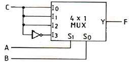
- F(A,B,C) = Σ(1,3,5,6)
- F(A,B,C) = Σ(0,1,5,8)
- F(A,B,C) = Σ(2,5,7,8)
- F(A,B,C) = Σ(0,2,4,6)
(정답률: 52%)
64. 조합논리회로 설계의 절차상 순서로 맞는 것은?
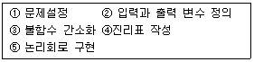
- ①→②→③→④→⑤
- ①→③→②→④→⑤
- ①→④→③→②→⑤
- ①→②→④→③→⑤
(정답률: 37%)
65. 다음 [그림]과 같은 회로의 명칭은?
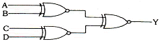
- 다수결 회로
- 우수 패리티 발생 회로
- 기수 패리티 발생 회로
- 비교 회로
(정답률: 46%)
66. 다음 회로의 동작을 설명한 것 중 옳은 것은?
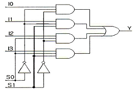
- 이 회로는 I0, I1과 I2, I3을 비교하는 비교회로이다.
- S0=1, S1=1일 경우 I3 값이 출력된다.
- S0=0, S1=1일 경우 I2 값이 출력된다.
- 디멀티플렉서(demultiplexer) 회로로 동작한다.
(정답률: 40%)
67. JK 플립플롭의 특성 방정식은? (단, Q는 현재상태, Q(t+1)은 다음 상태이다.)
- Q(t+1) = J'Q'+KQ
- Q(t+1) = J'Q+KQ'
- Q(t+1) = JQ'+K'Q
- Q(t+1) = JQ+K'Q'
(정답률: 55%)
68. [그림]과 같은 게이트의 출력 a, b, c, d를 순서대로 나열한 것은? (단, Z는 high impedance 상태를 나타낸다.)
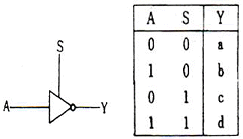
- 1, 0, 1, 0
- 1, 0, Z, Z
- Z, Z, 1, 0
- 0, 1, 0, 1
(정답률: 41%)
69. 다음 주어진 회로의 출력식은?
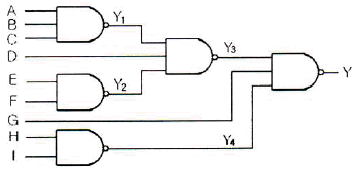
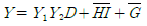
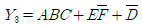
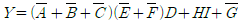
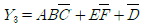
(정답률: 36%)
70. 다음 비교 회로에서 논리 F1의 기능은?
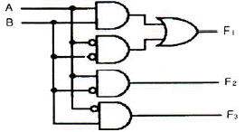
- A = B
- A > B
- A < B
- A ≥ B
(정답률: 44%)
71. 조합논리회로로 구성되어 여러 가지 연산 기능을 하는 것은?
- MAR
- MBR
- ALU
- 누산기
(정답률: 59%)
72. 전가산기(full-adder)의 입력을 A, B, C라 할 때 sum의 출력으로 옳은 것은?
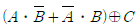
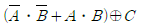
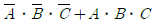
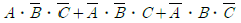
(정답률: 50%)
73. 다음 [그림]과 같은 회로의 명칭은?
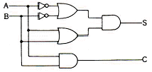
- 승산기
- 비교기
- 전가산기
- 반가산기
(정답률: 42%)
74. 다음 진리표에 해당하는 논리식은?
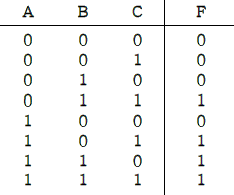
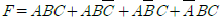
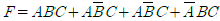
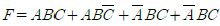
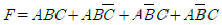
(정답률: 46%)
75. Clocked-RS 플립플롭에서 클록펄스가 0일 때 이 플립플롭의 기능은?
- T 플립플롭
- JK 플립플롭
- Monostable-Multivibrator
- Latch
(정답률: 44%)
76. 부호와 2의 보수(Signed 2's Complement)로 표시된 BCD 수 중 -9를 6자로 표시한 경우 옳은 것은?
- 101001
- 110110
- 110111
- 001001
(정답률: 40%)
77. 다음 [그림]과 같은 논리 회로는?
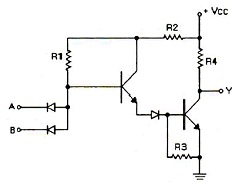
- RTL
- DTL
- TTL
- HTL
(정답률: 40%)
78. [그림]에서 주기가 1000[ns]라면, 클록 주파수는 몇 [MHz]인가?
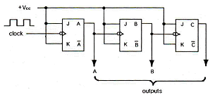
- 2
- 3
- 4
- 8
(정답률: 40%)
79. PI(기초함축함수)를 사용함으로써 필요없이 중복될 수 있는 연산 기법의 단점을 보완할 수 있는 방식은?
- 대수적 방법(Algebraic Method)
- 카르노도법(Karnaugh Map)
- 최소항 링(Minterm Ring) 알고리즘
- 퀸 맥크러스키 법(Quine-McClusky method)
(정답률: 40%)
80. 다음 중 제어 타이밍을 얻기에 편리하고 디코더가 필요한 것은?
- 리플카운터
- 존슨카운터
- 리셋카운터
- 링카운터
(정답률: 42%)
5과목: 데이터통신
81. HDLC 링크 구성 방식에 따른 세 가지 동작 모드에 해당하지 않는 것은?
- 정규 응답 모드(NRM)
- 비동기 응답 모드(ARM)
- 비동기 균형 모드(ABM)
- 정규 균형 모드(NBM)
(정답률: 60%)
82. 패킷교환 방식에 관한 설명으로 옳지 않은 것은?
- 패킷 교환 방식에서 각 패킷의 길이는 제한된다.
- 전송하는 데이터가 많은 통신환경에 적합하다.
- 노드나 회선의 오류가 발생시 다른 경로를 선택할 수 없어 전송이 중단된다.
- 저장-전달 방식을 사용한다.
(정답률: 45%)
83. IP address에 대한 설명으로 옳지 않은 것은?
- 5개의 클래스(A, B, C, D, E)로 분류되어 있다.
- A, B, C 클래스만이 네트워크 주소와 호스트 주소 체계의 구조를 가진다.
- D 클래스 주소는 멀티캐스팅(multicasting)을 사용하기 위해 예약되어 있다.
- E 클래스는 특수 목적 주소로 공용으로 사용된다.
(정답률: 57%)
84. 폴링 메시지를 수신한 보조국이 주국에 데이터를 전송한 다음에 폴링 메시지를 가까운 보조국으로 보내는 방식은?
- Roll-Call Polling 방식
- Hub-Go-Ahead Polling 방식
- Select-Hold 방식
- Fast-Selected 방식
(정답률: 52%)
85. 홀수 패리티 비트를 사용하여 문자를 전송할 경우 에러가 일어난 경우는?
- 11100011
- 11101111
- 10101011
- 11100111
(정답률: 66%)
86. 다음이 설명하고 있는 멀티포인트 링크 구성 방식은?
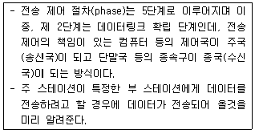
- polling
- selection
- buffering
- queueing
(정답률: 39%)
87. IPv4에서 IPv6로 천이하는데 사용되는 IETF에서 고안한 천이 전략 3가지에 해당하지 않는 것은?
- Dual Stack
- Tunneling
- Header Translation
- IP Control
(정답률: 48%)
88. 다음과 같은 기능을 가지고 있는 프로토콜은?
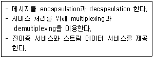
- RTCP
- RTP
- UDP
- TCP
(정답률: 39%)
89. 패킷교환의 가상회선 방식과 회선교환 방식의 공통점은?
- 전용회선을 이용한다.
- 별도의 호(call) 설정 과정이 있다.
- 회선 이용률이 낮다.
- 데이터 전송 단위 규모를 가변으로 조정할 수 있다.
(정답률: 37%)
90. TCP/IP에 관한 설명으로 옳지 않은 것은?
- TCP/IP 프로토콜은 인터넷 프로토콜로도 불린다.
- IP는 데이터의 전달을 위해 연결성 방식을 사용한다.
- TCP는 데이터 전달의 신뢰성을 위해 연결성 방식을 사용한다.
- TCP는 OSI 7계층 중 전송계층에 해당한다.
(정답률: 46%)
91. HDLC 프레임의 종류 중 링크의 설정과 해제, 오류 회복을 위해 주로 사용되는 것은?
- I-Frame
- U-Frame
- S-Frame
- R-Frame
(정답률: 57%)
92. 자동 재전송 요청기법(Automatic Repeat reQuest) 중 에러가 검출된 해당 블록만을 재전송하는 방식으로 재전송 블록 수가 적은 반면, 수신측에서 큰 버퍼와 복잡한 논리회로를 요구하는 기법은?
- Stop and Wait ARQ
- Selective Repeat ARQ
- Go-Back-N ARQ
- Adaptive ARQ
(정답률: 63%)
93. 주파수 분할 다중화기(FDM)에서 부채널 간의 상호 간섭을 방지하기 위한 것은?
- 가드 밴드(Guard Band)
- 채널(Channel)
- 버퍼(Buffer)
- 슬롯(Slot)
(정답률: 48%)
94. RIP의 한계를 극복하기 위해 IETF에서 고안한 것으로 네트워크의 변화가 있을 때에만 갱신함으로 대역을 효과적으로 사용할 수 있는 라우팅 프로토콜은?
- BGP
- IGRP
- OSPF
- ARP
(정답률: 41%)
95. 다음이 설명하고 있는 것은?
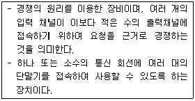
- 다중화기
- 라우터
- 이더넷
- 집중화기
(정답률: 41%)
96. QPSK(Quadrature PSK) 변조방식에서 변화되는 위상차는?
- 45°
- 90°
- 180°
- 위상차 없음
(정답률: 62%)
97. 동적 대역폭을 사용하지 않는 통신 교환방식은?
- 회선 교환
- 메시지 교환
- 데이터 그램 패킷 교환
- 가상 회선 패킷 교환
(정답률: 31%)
98. OSI-7계층 중 통신 종단간(end-to-end)의 에러제어와 흐름제어를 하는 계층은?
- 응용 계층
- 네트워크 계층
- 물리 계층
- 전송 계층
(정답률: 43%)
99. 송수신 간의 속도 차이나 수신측 버퍼 크기의 제한에 의해 발생 가능한 정보의 손실을 방지하기 위해서 수신측이 송신측을 제어하는 것은?
- 에러 제어
- 흐름 제어
- 동기 제어
- 비동기 제어
(정답률: 54%)
100. OSI-7계층 중 물리계층의 특성에 대한 설명으로 틀린 것은?
- 전송 신호의 준위와 폭과 같은 전기적인 규격을 규정한다.
- 접속하기 위한 커넥터의 모양, 핀의 수와 같은 기계적인 규격을 규정한다.
- 물리적인 연결을 통해 데이터를 주고받기 위한 절차적인 규격을 규정한다.
- 어떤 전송 링크와 노드를 거쳐 패킷을 전달할 것인지의 경로 선택을 규정한다.
(정답률: 56%)